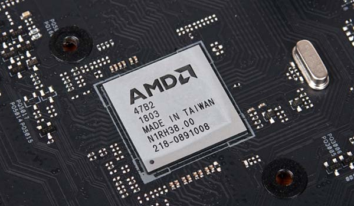
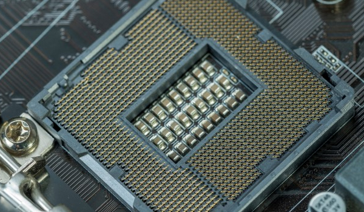

O cabo da fonte de energia do computador se conecta à placa mãe, e a partir de então, ela distribui essa energia para alimentar o processador e os outros dispositivos encaixados nos slots.
A cada clique que você dá uma informação está sendo difundida pela placa mãe a todos os dispositivos que participam dessa ação.
Componentes
Chipset
O Chipset é um chip ou um conjunto de chips que age diretamente no significa que é ele quem possibilita, por exemplo, o acesso à memória RAM, a comunicação entre o processador e a memória e a transmissão de informações do teclado e outras saídas, por exemplo.
Soquete
O soquete é o slot onde o processador é instalado. Cada soquete pode encaixar um ou alguns modelos específicos de processadores, visto que eles possuem números determinados de pinos a serem encaixados.
Entradas e conexões
A placa mãe possui conectores responsáveis por cada componente do computador, são eles:
E Slots de memória: responsáveis pela conexão das memórias
Slots de expansão: permitem o encaixe de recursos como placas de vídeo e áudio, modems, placas de rede, entre outros. Os slots de expansão mais comuns são PCI (Peripheral Component Interconnect), PCI Express, AGP (Accelerated Graphics Port) e ISA (Industry Standard Architecture).
Conectores IDE (Integrated Drive Eletronics): responsáveis pela conexão de drivers de CD/DVD, além do HD ao processador.
Conectores SATA (Serial ATA): responsáveis pela conexão de drivers ópticos e portas de CD e DVD-ROM, sendo mais rápidos e demandando conectores menores que os do padrão IDE.
Conectores USB: as portas USB são utilizadas para conectar dispositivos externos ao computador.
Portas PS/2: entradas para a conexão de mouse e teclado.
Conector de alimentação: porta específica para a conexão da fonte de alimentação, que leva a energia elétrica até a placa-mãe.